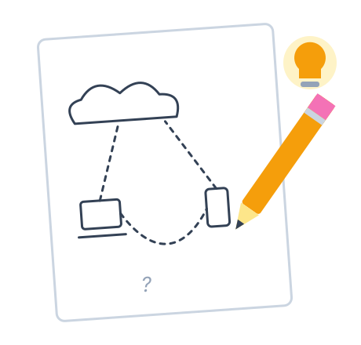
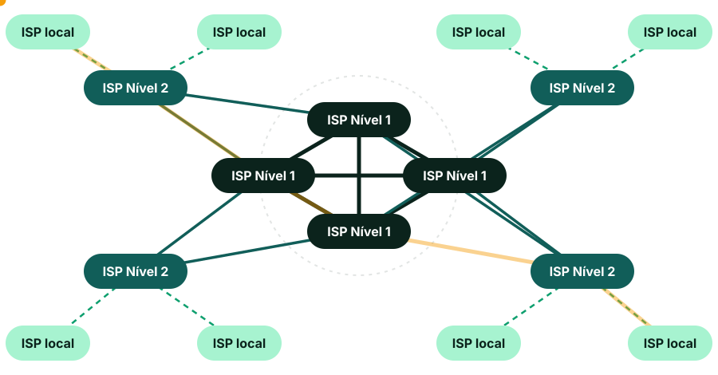
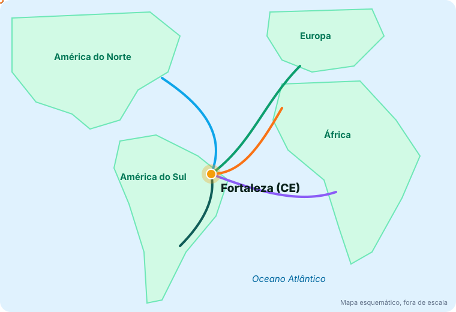
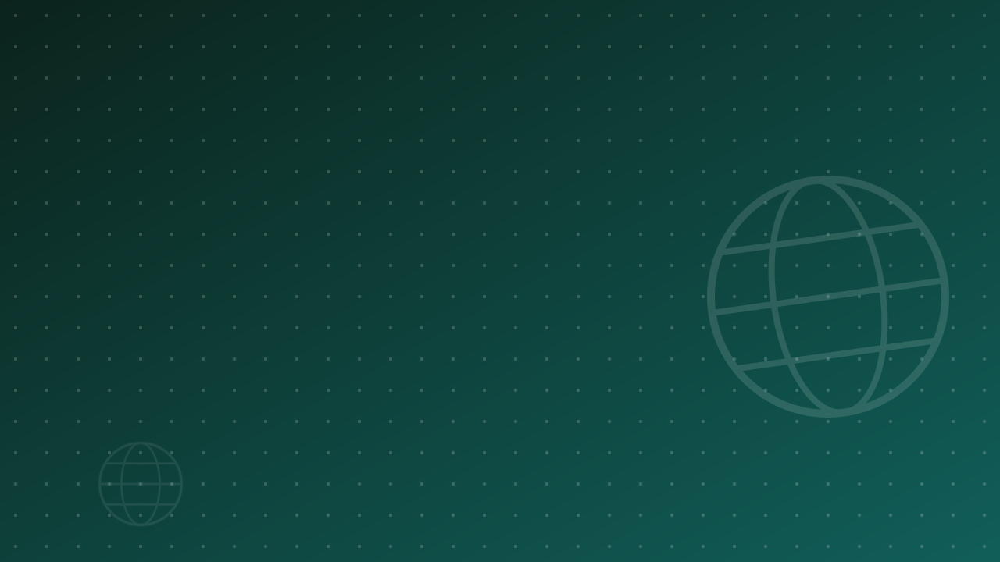
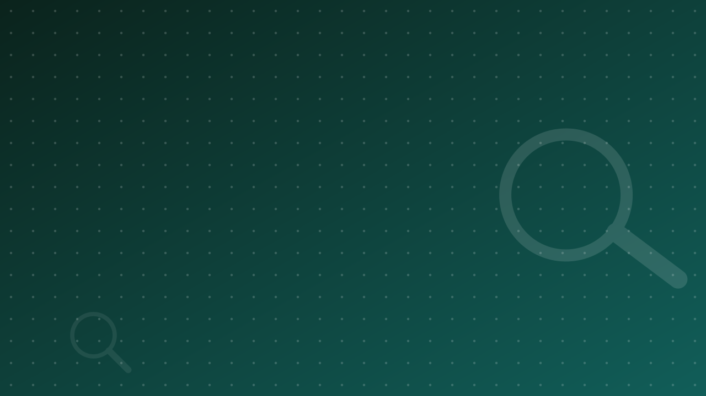
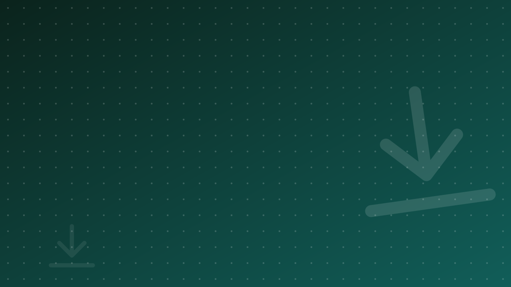
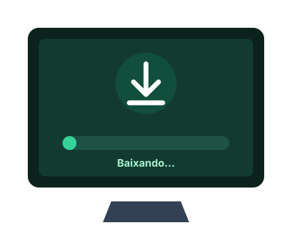
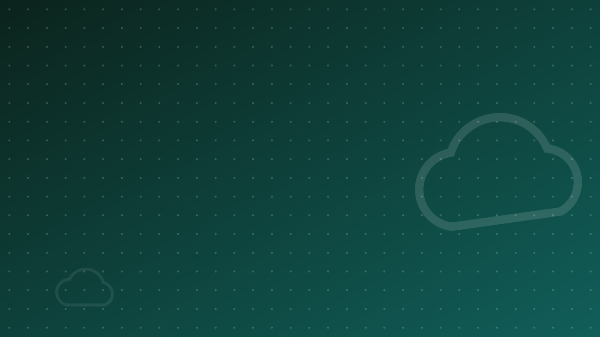
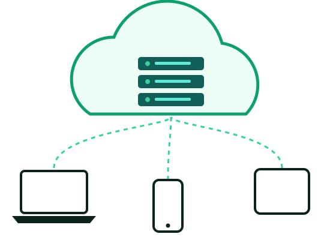
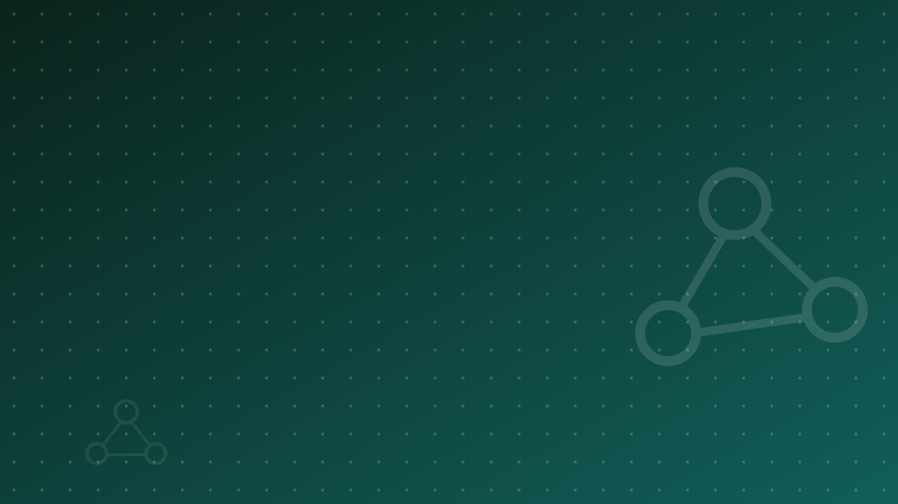

~2 min. Apresentar o roteiro da aula: de onde a internet veio, como ela chega até nós e as ferramentas do dia a dia (navegador, busca, e-mail, nuvem, redes sociais). Indicar o Catálogo de Aulas para revisão.
2
História da Internet
A internet surgiu da necessidade de comunicação mais rápida e segura durante a Guerra Fria, na década de 1960. A Agência de Projetos de Pesquisa Avançada dos Estados Unidos (ARPA) desenvolveu a ARPANET, que foi o princípio das redes de computadores e da internet atual.
O princípio da internet é interligar vários computadores de redes diferentes, permitindo o compartilhamento de informações entre pessoas e empresas em todo o mundo. Com ela podemos saber o que acontece globalmente, interagir com pessoas e descobrir novas formas de trabalhar e de fazer negócios.
Década de 1960Guerra Fria: a defesa dos EUA precisa de uma rede que continue funcionando mesmo se parte dela cair.
1969A ARPANET conecta os primeiros computadores de universidades americanas.
1991A World Wide Web (WWW) é aberta ao público e a internet se populariza.
HojeCerca de 6 bilhões de pessoas conectadas no mundo (UIT, 2025).
Ideia central: redes diferentes, conectadas entre si, trocando informação.
~3 min. Contar a origem militar e acadêmica. Enfatizar que a rede foi pensada para não depender de um único ponto: se um caminho cai, os dados seguem por outro. Isso prepara a atividade e o slide “Como funciona”.
3
Atividade: desenhe a internet

5 minutos
Desenhe como você imagina o funcionamento da internet.
Seja criativo e explore todas as suas ideias. Algumas perguntas para começar:
Como uma mensagem sai do seu celular e chega a outra pessoa?
Por onde ela passa no caminho?
O que acontece se um desses caminhos parar de funcionar?
Não existe desenho errado. Vamos comparar com o modelo real no próximo slide.
~5 min. Iniciar o cronômetro (tecla T). Circular pela sala, pedir que 2 ou 3 estudantes mostrem o desenho. Guardar os desenhos para comparar com o diagrama de ISPs.
4
Como funciona a internet?

ISP localO provedor que leva a internet até a sua casa, escola ou celular.
ISP Nível 2Redes regionais e nacionais que interligam os provedores locais.
ISP Nível 1Grandes redes de alcance mundial (backbones) conectadas entre si.
Pacote de dadosO ponto laranja: seus dados viajam em pequenos pacotes e podem seguir caminhos diferentes.
~4 min. ISP = Internet Service Provider (provedor). Mostrar o pacote percorrendo: casa → ISP local → nível 2 → nível 1 → … → destino. Retomar os desenhos: quem desenhou algo parecido?
5
Tipos de conexão à internet
Conexão sem fio (Wi-Fi)
Transmite dados por ondas de rádio a partir de um roteador, permitindo acesso com alta velocidade dentro de casa, da escola ou do trabalho.
Conexão 4G/5G
Funciona pelas torres de telefonia celular, com amplo raio de alcance. Presente na maioria dos celulares atuais; o 5G oferece mais velocidade e menor atraso.
Conexão via satélite
Pode ser oferecida em qualquer parte do planeta com uma antena, sem depender de cabos. Útil em zonas rurais, áreas remotas e unidades de conservação.
Conexão cabeada
Versão com fio, distribuída por um roteador. Hoje usa principalmente fibra óptica, que transmite o sinal por luz e oferece a conexão mais estável.
Novidade: satélites de órbita baixa (como a Starlink) reduziram o atraso da internet via satélite, tema do vídeo adiante.
~3 min. Perguntar quais conexões os estudantes usam. Relacionar a internet via satélite com o trabalho de campo em meio ambiente (fiscalização, monitoramento em áreas sem sinal de celular).
6
Cabos submarinos

A maior parte do tráfego de internet entre continentes não passa por satélites, e sim por cabos de fibra óptica no fundo do mar.
Fortaleza (CE) é o principal ponto de chegada de cabos submarinos do Brasil, ligando o país à América do Norte, à Europa e à África.
~3 min. Abrir o mapa interativo e clicar em Fortaleza para ver os cabos que chegam ao Ceará. Curiosidade: muitas falhas de cabos são causadas por âncoras de navios e redes de pesca.
7
Distribuição da internet pelo mundo
~6 bilhõesde pessoas usam a internet no mundo (UIT, 2025)
~2,2 bilhõesainda estão desconectadas, sobretudo em áreas rurais e países de baixa renda
90%dos brasileiros com 10 anos ou mais usaram a internet (IBGE, PNAD TIC 2025)
~3 min. O mapa é interativo: passar o mouse sobre os países e usar a linha do tempo. Discutir desigualdade de acesso (exclusão digital) entre países e entre zona urbana e rural.
Cabo submarino ou satélite: qual é mais rápido? E mais barato?
Quem ganha com internet via satélite no interior do Piauí?
Olhar ambiental: milhares de satélites geram lixo espacial e mais brilho no céu noturno, afetando a astronomia.
~17 min (vídeo de 15 min + 2 min de conversa). Ativar legendas em português (Configurações → Legendas → Traduzir automaticamente). Se a sala estiver sem internet, usar só as perguntas.

Bloco 2
A Internet
Web, endereços e navegadores
Transição: da infraestrutura (cabos, satélites) para o que usamos na tela.
10
World Wide Web (WWW)
A World Wide Web é um sistema que reúne várias mídias interligadas por meio eletrônico, onde é possível acessar textos, imagens, sons e vídeos. É o padrão mundial para navegação na internet.
Estrutura de uma URL
https://Protocolo seguro: o cadeado indica que a conexão é criptografadawww.World Wide Web: padrão mundial (hoje costuma ser opcional)nomedositeNome do site: google, gov, ifpi, inpe.comDomínio: indica a finalidade do site.brPaís: indica a localização (Brasil)
Passe o mouse (ou toque) em cada parte do endereço.
Tipos de domínio
.br
sites brasileiros
.com
sites comerciais
.gov.br
governo: gov.br/ibama, gov.br/mma
.edu.br
educação: ifpi.edu.br
.org
organizações não governamentais
~3 min. Montar uma URL na lousa com os estudantes. Mostrar que órgãos ambientais federais estão em gov.br (Ibama, ICMBio, MMA). Alertar: o cadeado só garante a conexão criptografada, não que o site seja confiável.
11
Navegadores web
O navegador é o programa usado para navegar na internet: com ele você acessa sites e visualiza páginas da web. Existem vários navegadores disponíveis, todos gratuitos.
E
Microsoft Edge
Desenvolvido pela Microsoft. Vem instalado por padrão no Windows e usa o mesmo motor do Chrome (Chromium).
C
Google Chrome
Do Google, gratuito e multiplataforma. É o navegador mais usado no mundo, inclusive nos celulares Android.
F
Mozilla Firefox
Da Mozilla Foundation, sem fins lucrativos. Leve, seguro e com foco em privacidade; disponível para vários sistemas.
S
Safari
Da Apple, presente no iPhone, iPad e Mac. É otimizado e tem bom desempenho nesses dispositivos.
~3 min. Perguntar qual navegador cada um usa no celular e no computador. Todos acessam os mesmos sites; a escolha é por preferência, desempenho e privacidade.
12
Elementos de um navegador
Barra de endereçosOnde você digita o endereço do site e pressiona Enter. Também aceita pesquisas.
Botões de controleVoltar, Avançar e Atualizar (F5). Esc interrompe o carregamento.
Guias (abas)Abrem várias páginas em uma só janela. Ctrl+T abre uma nova guia.
FavoritosSalve páginas para acessar depois (Ctrl+D ou a estrela ★).
Menu de configuraçõesHistórico, downloads, privacidade e extensões. Cada navegador tem funções próprias.
~3 min. Se houver computador conectado ao projetor, abrir o navegador e mostrar cada elemento ao vivo, incluindo Ctrl+T, Ctrl+D e o histórico (Ctrl+H).

Bloco 3
Pesquisar na Internet
Buscadores, operadores e fontes confiáveis
Transição para a parte prática de pesquisa. Se possível, estudantes acompanham no celular.
14
Pesquisa de informações na internet
A internet é uma fonte enorme de informações. Para filtrá-las existem os buscadores, sites que pesquisam por palavras-chave: Google, Bing e DuckDuckGo. Clique nos exemplos para testar:
Importante: nem tudo na internet é confiável, e respostas geradas por IA no topo da busca também podem errar. Prefira fontes oficiais (.gov.br, universidades, institutos de pesquisa) e confira de onde veio a informação. Os antigos define: e related: foram descontinuados pelo Google.
~5 min. Testar 3 ou 4 operadores ao vivo e comparar com a busca sem operador. Pedir que os estudantes combinem dois operadores (ex.: site:gov.br filetype:pdf "resíduos sólidos").
15
Pesquisa de imagens e vídeos
Além de textos, os buscadores encontram imagens e vídeos, e podem até pesquisar a partir de uma foto tirada com o celular.
Pesquisa de imagens
No Google, digite o termo e clique em Imagens para ver resultados visuais. Clique na imagem para vê-la maior e acessar o site de origem.
Para usar em trabalhos: Ferramentas → Direitos de uso → Licenças Creative Commons.
Pesquisa por imagem
Com o Google Lens, você fotografa algo e o buscador encontra informações sobre ele.
No campo: fotografe uma planta, um inseto ou uma ave para descobrir a espécie. O app iNaturalist faz isso com ajuda de especialistas.
Pesquisa de vídeos
O YouTube permite pesquisar e assistir vídeos. Digite o assunto, pressione Enter e clique no vídeo desejado.
Use os Filtros para escolher duração e data, e ative as legendas quando precisar.
~4 min. Demonstrar o Google Lens com a foto de uma planta do campus. Explicar que imagem encontrada na internet não é automaticamente livre para uso.

Bloco 4
Download de arquivos
Baixar e enviar arquivos com segurança
Transição.
17
Download e upload de arquivos
Download é “baixar” arquivos da internet para o seu computador, celular ou tablet. Upload é o contrário: enviar arquivos do seu dispositivo para a web.
DownloadRetirar um arquivo da internet para o seu dispositivo.
UploadEnviar um arquivo para a web, como anexar em um e-mail.
Onde baixar com segurança
Lojas oficiais: Play Store, App Store e Microsoft Store.
Sites oficiais de quem desenvolve o programa (ex.: qgis.org).
Dados abertos ambientais:dados.gov.br, MapBiomas e INPE.
Vídeos offline: use o botão Download do próprio app (YouTube Premium, por exemplo).
Evite sites “baixadores” de vídeos e músicas: são cheios de anúncios enganosos e podem instalar vírus. Baixar conteúdo de terceiros sem permissão também pode violar direitos autorais.

~4 min. Atualização em relação ao material antigo: serviços como SaveFrom e 4Shared foram retirados por riscos de segurança e de direitos autorais. Mostrar onde ficam os downloads no navegador (Ctrl+J).
Bloco 5
Correio eletrônico
E-mail e Gmail
Transição.
19
Correio eletrônico (e-mail)
E-mail é a ferramenta para enviar e receber mensagens e arquivos pela internet. Bilhões de pessoas se comunicam por e-mail, e ele é indispensável para cadastros, trabalho e comunicação com órgãos públicos.
Estrutura do e-mail
usuario@provedor.com.br
Login: identificação do usuário (antes do @).
Provedor: Gmail, Outlook (antigo Hotmail), Yahoo, ou o institucional @ifpi.edu.br.
@ (arroba) significa “em”: usuário em tal provedor.
Campos de destinatário
Clique para revelar:
Para
Destinatário principal da mensagem.
Cc
Com cópia: o destinatário recebe e todos veem que ele foi copiado.
Cco
Com cópia oculta: recebe, mas ninguém vê o endereço dele. Ideal para enviar a muitas pessoas sem expor os e-mails.
~3 min. Perguntar antes de revelar: “quando eu uso Cco?”. Exemplo: convite de um evento de educação ambiental enviado a 50 pessoas → usar Cco para proteger os endereços.
20
Usando o Gmail
01
Criando uma contaAcesse gmail.com, clique em Criar conta e preencha o formulário. Ative a verificação em duas etapas.
02
Escrevendo e-mailsClique em Escrever, preencha destinatário, assunto e texto. Use o clipe para anexar (até 25 MB; acima disso vai como link do Google Drive).
03
Gerenciando e-mailsE-mails em negrito ainda não foram lidos. Responder volta ao remetente; Encaminhar envia a outras pessoas.
04
Segurança na saídaEm computadores compartilhados, sempre clique em Sair. Só fechar o navegador deixa a conta aberta para o próximo usuário.
~3 min. Mostrar a caixa de entrada e o botão Escrever. Reforçar a verificação em duas etapas e o “Sair” nos laboratórios do campus.
21
Prática: escrevendo um e-mail
Boas práticas de assunto e corpo
AssuntoCurto e específico: diga do que se trata. Nunca deixe em branco.
Saudação“Olá, professor Diego,” ou “Prezado(a) …,”.
IdentificaçãoQuem é você: nome, curso e turma.
MensagemObjetiva, em parágrafos curtos. Se houver anexo, avise no texto.
Despedida e assinatura“Atenciosamente,” + nome completo e curso.
Revise antes de enviarOrtografia, destinatário e anexo. Evite CAIXA ALTA, gírias e emojis.
Nova mensagem
Paradiego.cordeiro@ifpi.edu.br
Cce-mail de um colega da turma
AssuntoInformática Aplicada – Aula 06 – Prática de e-mail – Seu Nome
Olá, professor Diego,
Sou [seu nome], da turma [turma] do curso de Meio Ambiente. Envio em anexo a foto do meu desenho de como a internet funciona, feito na atividade desta aula.
Atenciosamente, [Nome completo] Meio Ambiente · IFPI
~6 min. Cada estudante escreve do próprio celular (Gmail ou e-mail institucional) seguindo o modelo, com um colega em Cc e a foto do desenho anexada (retoma a atividade do slide 3 e o anexo do slide anterior). Na próxima aula, comentar exemplos de assuntos bons e ruins recebidos, sem expor nomes.

Bloco 6
Computação em nuvem
Arquivos e programas acessíveis de qualquer lugar
Transição.
23
Computação em nuvem
A computação em nuvem (cloud computing) permite armazenar e acessar dados e programas pela internet, em vez de depender só do seu computador. É como ter um disco virtual e programas disponíveis em qualquer lugar, a qualquer hora: Google Drive, OneDrive e iCloud são exemplos.
Acessibilidade universal
Acesse arquivos e aplicativos de qualquer dispositivo conectado, sem estar perto do seu computador.
Redução de custos
Menos gastos com equipamentos, manutenção e licenças de software.
Escalabilidade flexível
Aumente ou diminua armazenamento e processamento conforme a necessidade, pagando pelo que usa.
Segurança e confiabilidade
Servidores com cópias de segurança automáticas protegem contra perdas e falhas de equipamento.

~3 min. Perguntar quem já perdeu arquivos por pen drive ou celular quebrado. Mostrar o Google Drive institucional, se disponível.
24
Softwares e plataformas online para Meio Ambiente
A nuvem também transformou o trabalho ambiental: hoje é possível monitorar florestas, queimadas e biodiversidade pelo navegador, com dados gratuitos.
Para análises no computador: QGIS, sistema de informação geográfica livre e gratuito (qgis.org).
~6 min. Adaptação para Meio Ambiente (substitui SAP e Salesforce do material original). Abrir pelo menos o MapBiomas e o BDQueimadas. Comentar que o CAR é exigido por lei para imóveis rurais e é uma área de atuação do técnico.
25
Prática: os dados ambientais do seu município
Em duplas, no celular ou no laboratório
Acesse a plataforma do MapBiomas e busque o seu município (ex.: Teresina).
Compare a cobertura do solo de 1985 com a do ano mais recente.
No BDQueimadas, filtre o estado do Piauí e veja os focos de calor dos últimos 30 dias.
Anote duas observações e de qual fonte elas vieram.
Ex.: aumento de áreas agrícolas ou urbanas e redução de vegetação nativa (Cerrado e Caatinga, no Piauí).
Por que usar a fonte oficial?
Dados com metodologia publicada e revisada, que podem ser citados em relatórios técnicos.
~6 min. Atividade que substitui o vídeo sobre CRM do material original. Projetar o passo a passo uma vez e depois deixar as duplas explorarem. Encerrar com 2 ou 3 duplas compartilhando o que observaram.

Bloco 7
Redes sociais
Uso profissional, boas práticas e segurança
Transição.
27
Redes sociais no ambiente profissional
Redes sociais são espaços onde pessoas se conectam por interesses comuns. Na área ambiental, servem para educação ambiental, divulgação de projetos, mobilização e networking com órgãos, ONGs e empresas.
Facebook
Páginas, eventos e grupos. Bom para comunidades locais, mutirões de limpeza e grupos acadêmicos ou profissionais.
Instagram
Foco em fotos e vídeos. Ideal para campanhas de educação ambiental e para mostrar projetos e ações em campo.
LinkedIn
Rede profissional: currículo online, vagas de estágio e emprego na área ambiental e contato com empresas e consultorias.
Dica: siga perfis oficiais como Ibama, ICMBio, INPE e a secretaria de meio ambiente do seu estado.
~3 min. Perguntar quem já tem LinkedIn. Sugerir criar o perfil ainda no curso, registrando estágios e projetos.
28
Boas práticas em redes sociais
Segundo a Cartilha de Segurança do CERT.br, é fundamental adotar comportamentos seguros nas redes sociais para proteger informações pessoais e profissionais.
Configurações de privacidade
Controle quem vê suas publicações e revise as configurações de privacidade regularmente.
Conteúdo profissional
Mantenha uma postura profissional e evite polêmicas: empregadores podem verificar seu perfil.
Informações pessoais
Evite compartilhar endereço, telefone, localização em tempo real ou dados financeiros.
Verificação de contatos
Aceite apenas pessoas conhecidas e desconfie de perfis falsos ou suspeitos.
~3 min. Pedir que cada estudante confira agora, no celular, se o seu perfil está público ou privado.
29
Segurança e comportamento digital
A segurança digital é essencial para qualquer profissional. Adote práticas seguras para proteger informações pessoais e do trabalho.
Golpes por mensagem
Bancos e órgãos públicos não pedem senha nem código por e-mail, SMS ou WhatsApp. Desconfie de promoções “milagrosas” e de pedidos urgentes de Pix.
Proteção do sistema
Mantenha sistema e aplicativos atualizados, não clique em links suspeitos e faça backup na nuvem.
Compras online
Compre em lojas conhecidas e verifique a reputação. O cadeado (https) protege a conexão, mas não garante que o site seja honesto.
Senhas seguras
Use senhas longas e diferentes para cada conta, um gerenciador de senhas e a verificação em duas etapas.
Lembre-se: na dúvida, não clique! Pesquise sobre o site ou peça ajuda antes de fornecer informações pessoais.
~3 min. Contar um golpe comum (falso boleto, falso parente no WhatsApp). Mostrar como ativar a verificação em duas etapas no WhatsApp: Configurações → Conta → Confirmação em duas etapas.
Encerramento
Alguma dúvida?
Este é o momento para esclarecer qualquer questão sobre o conteúdo que vimos até agora.
Não tenha receio de perguntar: as dúvidas de hoje são o conhecimento de amanhã!
~2 min. Recapitular os blocos (história, infraestrutura, web, pesquisa, e-mail, nuvem, redes e segurança) e abrir para perguntas.